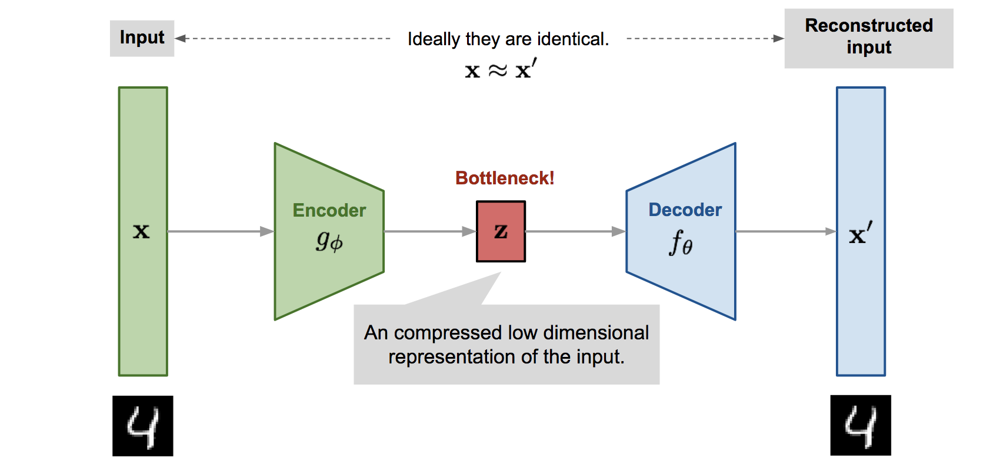

Variational Autoencoders (VAEs): a practical, intuition‑first guide
Why VAEs?
A Variational Autoencoder (VAE) can be thought of as a smarter version of an autoencoder that not only
learns to compress and reconstruct data but also shapes its latent space so it can be used for
generation. Unlike a standard autoencoder that maps each input to a single point, a VAE maps inputs to a
distribution (a mean and variance), ensuring that similar inputs occupy nearby regions in latent space.
At the same time, a regularization term nudges these distributions toward a simple prior (like a
standard Gaussian), which prevents the latent space from becoming messy or discontinuous. The result is
a smooth, well-structured latent space where sampling random points produces meaningful outputs,
interpolations between codes transition gradually, and the model can both reconstruct existing data and
create new, realistic examples.
Classic autoencoders compress an input \(x\) to a single point \(z\) and decode it back. Great for compression—not great for
generation: there’s no principled way to sample new \(z\) that
decode to realistic data.
VAEs fix this by learning a distribution over latent codes \(q_\phi(z\mid x)\) (typically a diagonal Gaussian), encouraging a smooth,
well‑behaved latent space from which we can sample new points and decode them into plausible data.
The Goal of a VAE: Generative Modeling
Variational Autoencoders (VAEs) leverage ideas from Bayes' theorem to learn a
compressed, latent representation of data and then generate new samples from that
representation. In short: learn a model of the data distribution p(x), introduce latent variables z that
explain x, and train encoder/decoder networks so we can sample z and decode plausible x.
Compression: The encoder maps inputs to a structured latent distribution over z.
Generation: Sample z from a simple prior and decode to produce new data.
Bayesian flavor: Priors, likelihoods, and posteriors tie together how z and x
relate.
Architecture at a glance

Encoder\(q_\phi(z\mid x)\): neural net outputs \(\mu_\phi(x)\) and \(\log\sigma^2_\phi(x)\).
Latent space: we sample \(z\) (see reparameterization
below).
Decoder\(p_\theta(x\mid z)\): neural net maps \(z\) to a distribution over data (Bernoulli for normalized pixels, Gaussian
for real‑valued data).
Objective: the ELBO
The Foundation: Bayes' Theorem
Bayes' theorem relates priors, likelihoods, posteriors, and evidence:
P(A|B) = [ P(B|A) · P(A) ] / P(B)
P(A|B) (posterior): probability of A given B.
P(B|A) (likelihood): probability of observing B if A is true.
P(A) (prior): belief about A before seeing B.
P(B) (evidence): overall probability of B.
Applying Bayes' Theorem to VAEs
p(z) — prior over latents; usually a standard normal to regularize the space.
p(x|z) — likelihood modeled by the decoder; maps latent codes to a distribution
over data.
p(z|x) — posterior we would like to infer for encoding.
p(x) — evidence (marginal likelihood) we ultimately care about: p(x) = ∫ p(x|z)
p(z) dz.
The Challenge: Intractable Posterior
Computing the true posterior p(z|x) = p(x|z) p(z) / p(x) is typically intractable because p(x) requires
integrating over all z.
The "Variational" Solution: Approximating the Posterior
Introduce an approximate posterior q_phi(z|x) (the encoder). It outputs the
parameters of a simple distribution (often diagonal Gaussian) that approximates the true posterior while
remaining easy to sample from and differentiate through.
The Evidence Lower Bound (ELBO)
Maximizing log p(x) is equivalent to maximizing a lower bound:
Diagram of the reparameterization mapping from ε to z.
What problem are we solving?
We want gradients of the reconstruction term \(\mathbb{E}_{q_\phi(z\mid x)}[\log
p_\theta(x\mid z)]\) with respect to both \(\theta\) and \(\phi\). But sampling \(z\sim q_\phi(z\mid x)\) makes
backpropagation tricky—naïvely, you can’t differentiate through a random draw. The
score‑function (REINFORCE) estimator is general but high‑variance.
The core idea
Push randomness into a parameter‑free noise source and make the sample a differentiable function of that
noise and the parameters. For Gaussians:
Low variance in practice: Pathwise estimators usually have dramatically lower variance
than score‑function estimators, so VAEs train stably with as few as \(L=1\)
Monte‑Carlo sample per datapoint.
Non‑Gaussian reparameterizations: Many continuous distributions admit transforms
from base noise (e.g., Gamma via implicit reparameterization; Logistic via inverse‑CDF).
Discrete latents: Use Gumbel‑Softmax / Concrete to relax categorical
variables for backprop. At test time you can harden the argmax if needed.
Variance control: If gradients are noisy, consider multiple \(\varepsilon\) samples per \(x\), control variates,
or KL‑annealing to stabilize early training.
Common pitfalls
Posterior collapse: Decoder too strong → KL → 0. Try KL warm‑up/annealing, smaller
decoder, or β‑VAE (\(\beta>1\)).
Numerical stability: Predict log‑variance and clamp it; add small \(\epsilon\) to std; compute BCE with logits for Bernoulli outputs.
Unit mismatch: Use a likelihood that matches your data (Bernoulli for 0–1 pixels;
Gaussian for real values).
Other notes
Local reparameterization trick: Sample at the level of pre-activations to reduce
variance in large layers; useful when decoding with big FC/conv layers.
Full vs. diagonal covariance: Diagonal is standard and cheap; full-covariance
posteriors are expressive but expensive. A middle ground is low-rank + diagonal.
Why predict log-variance: It keeps σ positive and numerically stable; clamp logvar to a sensible range (e.g., [-6, 2]).
Training loop (pseudocode)
Encode \(x\) to \(\mu, \log\sigma^2\).
Sample \(\varepsilon\sim\mathcal{N}(0,I)\); set \(z=\mu+\sigma\odot\varepsilon\).
Decode \(z\) to parameters of \(p_\theta(x\mid z)\).
Compute reconstruction loss (e.g., BCE for Bernoulli pixels or MSE/Gaussian NLL) and the analytic KL
above.
Minimize \(\text{loss}=\text{recon}+\text{KL}\); backprop to update \(\theta,\phi\).